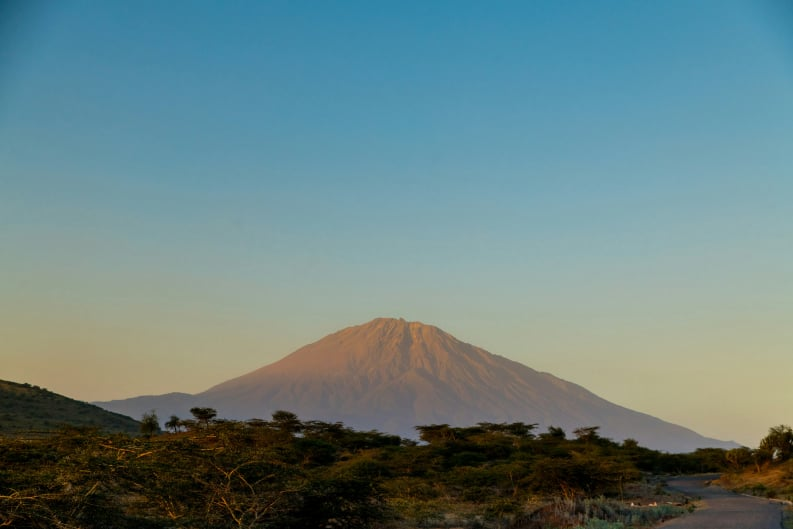

Rising to 4,566 meters within Arusha National Park, Mount Meru is Tanzania’s second-highest mountain and one of East Africa’s most scenic trekking destinations. The climb offers dramatic crater views, abundant wildlife encounters, and excellent acclimatization for those preparing for Mount Kilimanjaro.
Book This Trek →
Tanzania's second-highest peak and one of Africa's finest climbs — a four-day circuit through dense rainforest, open moorland, and dramatic volcanic craters to the 4,566m summit, with Kilimanjaro filling the horizon at dawn.
Mount Meru (4,566m) is Tanzania's second-highest mountain and one of Africa's most rewarding multi-day climbs. Located inside Arusha National Park just 70 km west of Kilimanjaro, it is far less crowded than its famous neighbour — yet offers a richer variety of landscapes, from dense rainforest teeming with colobus monkeys and buffalo, through open moorland and giant heather, to the sheer inner walls of a dramatic horseshoe-shaped volcanic crater.
The four-day route ascends through the park on foot, overnighting at three staffed mountain huts — Miriakamba, Saddle, and Rhino Point — before a midnight summit push to Socialist Peak, the highest point on the crater rim. The classic reward: watching the sunrise paint Kilimanjaro's ice cap gold from the summit, with the crater floor far below and the plains of Arusha stretching away to the south.
Mount Meru is also the ideal acclimatisation climb before a Kilimanjaro attempt, with enough altitude to condition the body for 5,895m. An armed park ranger accompanies the group throughout — a mandatory requirement given the presence of buffalo, elephant, and other large mammals on the lower slopes.
After an early morning drive from Arusha (roughly 45 minutes), the climb begins at Momella Gate inside Arusha National Park. The trail climbs steeply at first through lush montane rainforest — home to troops of black-and-white colobus and blue monkeys, as well as buffalo that graze along the forest margins. The route passes Tulusia Hill with open views across the Arusha plains before arriving at Miriakamba Hut, a comfortable A-frame camp set in a clearing at the forest edge, with the inner walls of the crater visible above.
The trail climbs out of the forest and into the moorland zone, passing through giant heather and everlasting flowers as the vegetation thins and the views dramatically open up. The route follows the outer rim of the crater, passing Mgongo wa Tembo ("Elephant's Back") ridge with sweeping views of Kilimanjaro to the east. Saddle Hut sits on a broad col between Little Meru and Socialist Peak, with the inner crater dropping away on one side and the Arusha plains on the other. A short afternoon acclimatisation walk to the summit of Little Meru (3,820m) is strongly recommended.
Departure from Saddle Hut begins around midnight. The trail traverses the narrow crater rim in the dark — a dramatic ridge walk with a sheer drop into the inner crater on one side and a steep outer slope on the other. Rhino Point (3,800m) and Cobra Point are passed before the final steep push to Socialist Peak (4,566m), typically reached at sunrise. On a clear morning, Kilimanjaro dominates the eastern horizon, its ice cap glowing in the first light — one of the finest mountain views in Africa. After summit photographs, descend all the way back to Miriakamba Hut for a late breakfast and afternoon rest.
After breakfast, the final descent returns through the rainforest to Momella Gate — a relaxed downhill walk that takes 2–3 hours, with one last chance to spot wildlife along the way. Summit certificates are issued at the gate for all those who reached the top. A vehicle transfers you back to your hotel in Arusha for a well-earned lunch and the rest of the afternoon to recover.
Mount Meru sits inside Arusha National Park, just 70 km from Arusha town — one of the most accessible major mountains in Africa. Our team handles all ground transfers from your Arusha hotel.